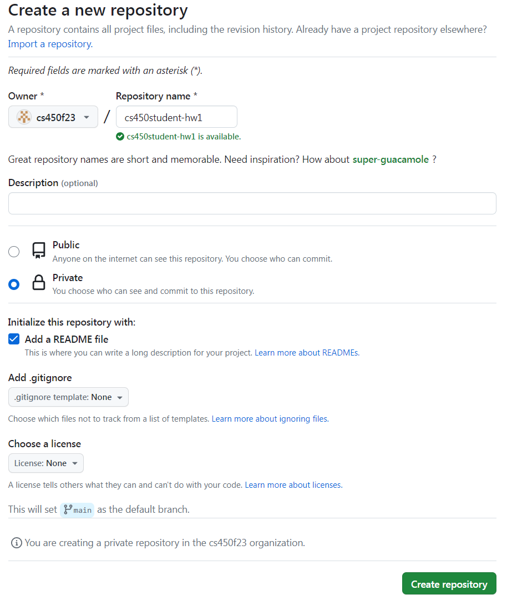

Homework 1
Last updated: Thu, 21 Sep 2023 12:48:17 -0400
Out: Mon Sep 18, 2023, 00:00 EST
Due: Sun Sep 24, 2023, 23:59 EST
Overview
This assignment introduces The Design Recipe, a systematic way to write programs that are both correct and readable.
This hw will be graded accordingly:
correctness (9 pts)
design recipe (20 pts)
style (5 pts)
README (1 pt)
Setup
(The following is different from the last assignment, so please read carefully.)
Create a new repository for this assignment by going to the CS450 Fall 2023 GitHub Organization page and clicking "New".

Name the repository <YOUR ACCOUNT NAME>-hw1 where <YOUR ACCOUNT NAME> is your GitHub account name.
For example, if my GitHub account is cs450student then I would name my hw1 repository cs450student-hw1.
Mark the repository as Private.
Check "Add a README file".
Here is an example screenshot: 
When done click "Create repository". For this assignment, there is hw1 starter code but you won’t be able to fork it. If you wish, though, you can copy the files into your own repo and then edit them.
Submitting
Do not submit until all code has been thoroughly tested, independent of the autograder, and you are reasonably sure the assignment is complete and correct.
The autograder is not a software development tool so please don’t use it as one.
If you submit and get an autograder error, this means the code you wrote is not complete and correct and it’s up to you to figure out why.
The course staff is here and eager to help, but cannot do so if students don’t explain what they’ve tried first (e.g., "why is the autograder giving an error?" is not something we can help with).
The grading criteria (i.e., test suite) is subject to change. This means that the visible grade seen during submission is not the final grade.
A submission must have the following files in the repository root:
hw1.rkt: Contains the hw solution code.
All defines should use the name specified in the exercise (ask if you are unsure) and should be provided.
The easiest way to ensure all necessary definitions are provided is to put as the second line in the file:
This automatically provides all definitions in the file. (The first line should be #lang racket)
All code should also follow proper Racket Style.
tests.rkt: This file should require hw1.rkt and define tests for it.
Specifically, it should define a rackunit test-suite which contains sufficient rackunit test cases (e.g., check-equal?, etc.) for each defined function.
lecture03.rkt: Contains modified ball animation
lecture03-tests.rkt: Tests for lecture03.rkt
NOTE (09-21-203): added github url requirement
Also, the repository must have appropriate commit messages. See How to Write a Git Commit Message if you are unsure how to write a commit message.
When ready, submit this assignment to Gradescope hw1 using the "GitHub" submission feature with the hw1 repository selected.

Exercises
Read Chapter 3 of the Textbook
Do exercises 34-38 from section 3.2 of the Textbook. The code should go in a file named hw1.rkt.
Note that functions you write must now follow The Design Recipe. (Just submitting code is no longer sufficient.)
Signatures should use define/contract and the predicates defined in the Data Design step.
For Examples and Tests, do not use check-expect from the Beginning Student Language (even though the textbook says to). Instead, use check-equal? or other testing forms from rackunit.
In this assignment, each function should have at minimum one Example, and one more Test than Examples (so two minimum tests).Examples for a function definition should be right after the define in hw1.rkt. But Tests should be put into the test-suite in tests.rkt. Try to think about corner cases and code coverage. (I may run your test suite against the code of other students and award bonus points for bugs found.)
Do exercises 39-47 39-44 from section 3.6 of the Textbook.
Again, all functions should follow The Design Recipe, and Tests should go in tests.rkt.
In this assignment, each function should have at minimum one Example, and one more Test than Examples (so two minimum tests).
Part of the goal of this course is to practice reading, as well as writing programs. To practice reading, change the big-bang program from lecture 3 to wrap around when it goes off the screen.
Something like this:
Make sure to fill in the missing Design Recipe steps that we didn’t get to from class (and delete the non-big-bang example code).
In this assignment, each function should have at minimum one Example, and one more Test than Examples (so two minimum tests).
This should be straightforward to do if you follow The Design Recipe and think about data representations first (but may be more difficult if you just start changing code without thinking!).
Put tests in a file called lecture03-tests.rkt.